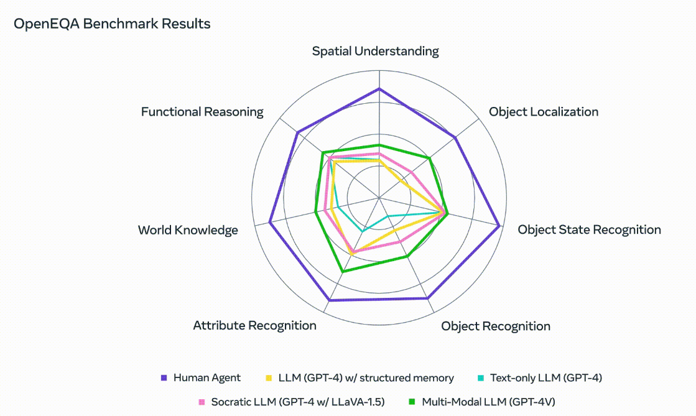

Vision-Language Models
Using LLMs to break down images into a machine-legible format.


We've all heard about LLMs by now, they can be used as chatbots that can attempt to mimic a given persona, as search engines that can give us succinct summaries for our query, as document template writers, as UI-less Operating Systems, etc.
However, by now we have seen a few of the pitfalls of LLMs: their size require the model to run on the cloud which adds latency, their ML nature means that hallucinations can and will happen which affects people's trust in these products, they are auto-regressive and can't reason about the world which stops them from actualising as AGI, and finally, we have seen many dubious applications of LLMs that really make us question their usefulness.
I have recently come across Multiframe VLMs (like Claude 3 and Gemini 1.0 Pro Vision), the use of computer vision and LLMs to break down a 3D environment in a way that can be fed to a machine algorithm for further reasoning. The output of this is usually models that are able to interact with or reason about the environment around them.
For example, a machine is recording a person's PoV as they move around the house and then the user asks "Where did I leave my work badge?". The machine is then able to go through the previous footage and will detect that the work badge is located on top of the desk.

Meta has also released their benchmarking method for judging these models in the form of OpenEQA (Open Embodied Question Answering) which gauge them according to how good they are with questions regarding spatial understanding, object localisation, functional reasoning, etc.
This is all particularly interesting to me because being able to digest a 3D environment for an AI is a problem that has been tackled through multiple different methods such as image segmentation, scene graphs, etc. Using LLMs to solve this part of the problem and use further methodology to reason about the environment and take action is a creative application of this new technology.
You could use this new technology to come up with a more proactive approach using a deeper understanding of humans and our internal thought processes. An example could be that instead of waiting for the human to ask where they left their badge, the machine could recognise that (a) the human is getting ready for work, (b) they haven't picked up their badge yet and (c) the human is wandering aimlessly and therefore assume that the user is looking for their badge and tell them where it is outright. Humans already assume others' internal thought processes in this way, via Theory of Mind.
At the end of the day, this technology will only really address the lack of reasoning in LLMs. There's still the size, latency and hallucinations issues to deal with but Rome wasn't built in a day!
What do you think? Are LLMs another tech that will pass us by or will we come up with interesting ways to adopt this technology into our lives?
-
Some interesting reading below!
- Paper: Gopalkrishnan A., et al. (2024). Multi-Frame, Lightweight & Efficient Vision-Language Models for Question Answering in Autonomous Driving
- Paper: Majumdar A., et al. (2024). OpenEQA: Embodied Question Answering in the Era of Foundation Models
- Meta blog post: OpenEQA: From word models to world models